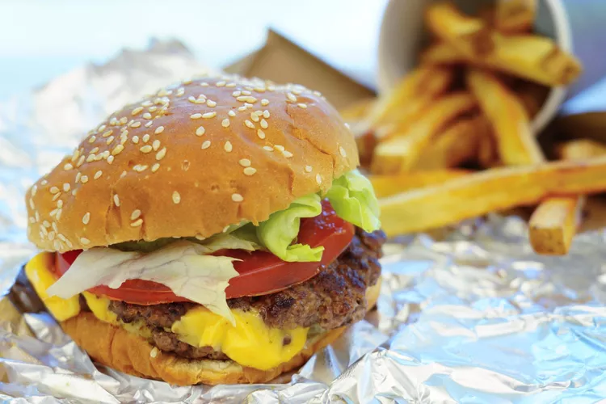

Five Guys Burger and Fries

Description
With gooey, melty cheese on a double burger with browned and crusty bits, plus fresh, crunchy toppings and a soft, steamy bun served alongside golden fries, this is pretty darn close to the real thing served at that restaurant chain run by those five brothers. Make these burgers and fries at home and save lots of money while satisfying your fast food cravings. Serve the fries with malt vinegar.
Ingredients
- 2 medium russet potatoes
- 2 litres of peanut oil for frying
- 400g ground braising steak
- 4 thick slices American cheese
- 1 teaspoon hot sauce (such as Frank's Red Hot)
- 1 tablespoon mayonnaise
- 2 medium sesame seed burger buns
- Shredded lettuce
- 2 thick slices tomato
- 1 diced onion
- A few pickle slices
- 1 teaspoon mustard
- 2 tablespoons ketchup
- Salt
Directions
- Cut potatoes in ½-inch wide strips. Place in a large bowl filled with warm water and soak for 20 minutes.
- Pour oil in a Dutch oven and heat over medium-high heat until it reaches 175 degrees C (350 degrees F). Line a rimmed baking sheet with paper towels and set a wire rack on top.
- Drain potatoes well and dry thoroughly with paper towels. Add ½ of the dried potatoes to the hot oil and cook, stirring often, until they soften slightly, about 3 minutes. Remove potatoes to the wire rack to drain. Repeat with remaining potatoes. Maintain oil temperature at 175 degrees C (350 degrees F) for finishing fries just before serving.
- Divide ground braising steak into 4 portions and flatten to form ¼-inch thick patties.
- Heat a large skillet over medium-high heat. Add burger patties to the hot skillet and cook undisturbed, until a brown crust has formed around the edges, 2 to 3 minutes. Flip, press down with a spatula to flatten, and cook for 2 more minutes. Flip again, press down once more, then top each patty with a slice of cheese; cook for 1 minute.
- While the burgers cook, spread mustard and ketchup on bottom halves of the buns. Drizzle hot sauce on the top halves of the buns, then spread mayonnaise over top. Layer with lettuce, tomato slices, pickles, and onions.
- Invert 1 patty onto a second patty so the cheese sides are touching. Repeat with remaining 2 patties. Place a stacked patty onto each top bun, and cover with a bottom bun, condiment-side down. Wrap burgers in foil.
- Return fries to the hot oil and cook until golden brown, 3 to 4 minutes. Drain on paper towels and sprinkle with salt. Serve immediately with burgers.